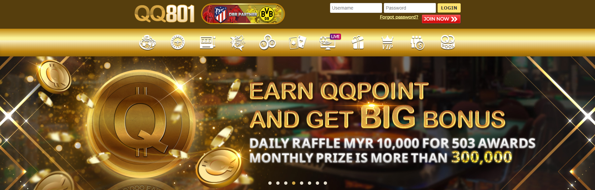

Are you aware that the online casino betting websites has been the most favorite past time of lots of individuals these days? Yes, that is true and guess why. Because you can earn a lot of money here while you are having fun. Actually, there are a lot of casino websites that you can see online because there are a many advertisements that promotes the entertainment of online gambling. However, it is not recommended that you can just sign up with one without properly checking it that casino betting websites will benefit you. It’s the reason that I suggest to join instead The Most Reliable Online Casino Betting Website.
The Most Reliable Online Casino Betting Website

If we talk about The Most Reliable Online Casino Betting Website, only one comes to mind and that is the QQ801run Malaysia Online Casino and Betting Website. Did you know that it is also known to be the most trusted online casino website among other sites in Malaysia? Now you know, but let us find out more about the reasons why it is very well known and why I am introducing it you.
100% Guaranteed Safe
As I mentioned above, it is The Most Reliable Online Casino Betting Website in terms of safety and security of the members. It is a licensed online casino website and being regulated by the Philippine Amusement and Gaming Corporation (PAGCOR).
Wide Array of Betting Games
You can have loads of game choices here, whether it will be the games of online casinos, the online slots and e-games or event eh online live sports betting games. Offered here are the different game variants of each games so you can surely be able to bet on your favorite games.
Outstanding Game Providers
All our high quality games that we offer is provided by our outstanding game developers and providers who are known in the gaming industry such as the Playtech and Microgaming so you can trust that our games will surely excite you.
Big Promotional Events and Bonuses
We are known to be The Most Reliable Online Casino Betting Website because we also offer lots of big promotional events to help our players and bettors improve their bankroll. Partaking in our promos and events will give a lot of bonuses to all of the members which means that our casino website is very much worth it to join in.